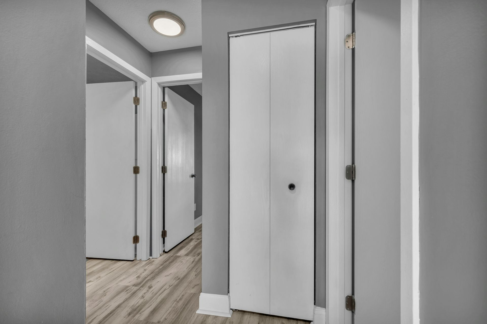
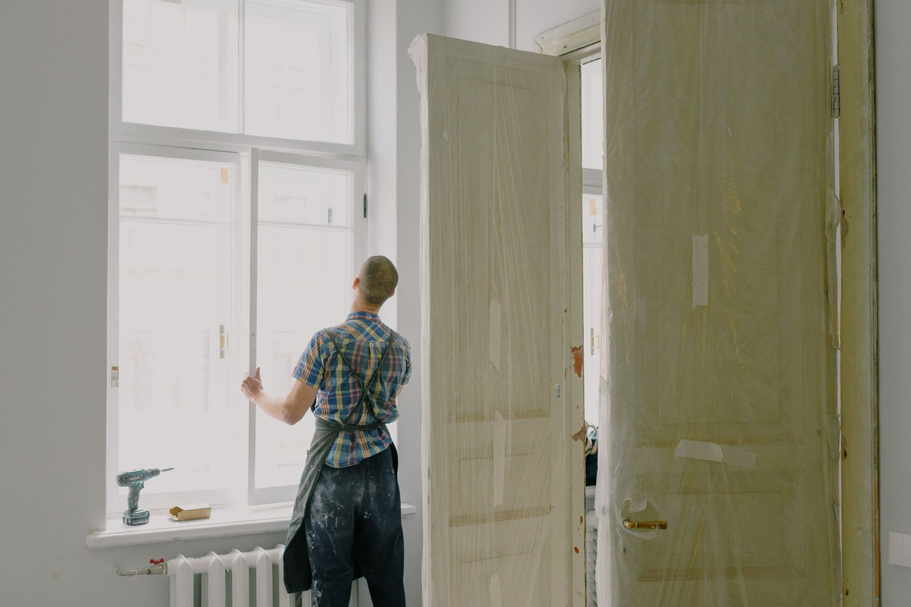
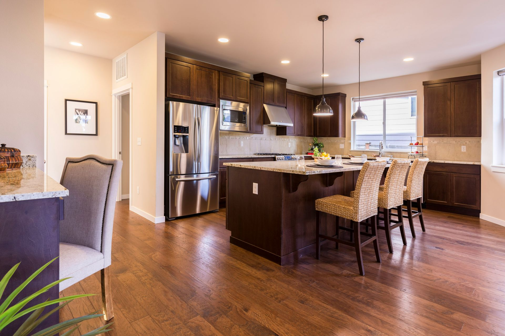
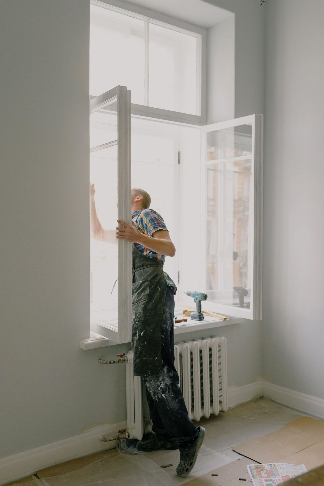
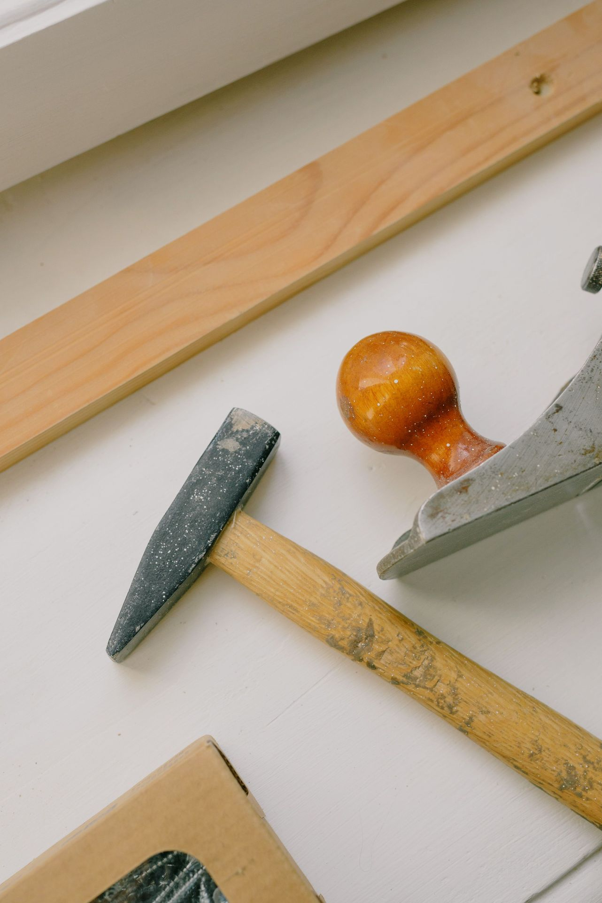
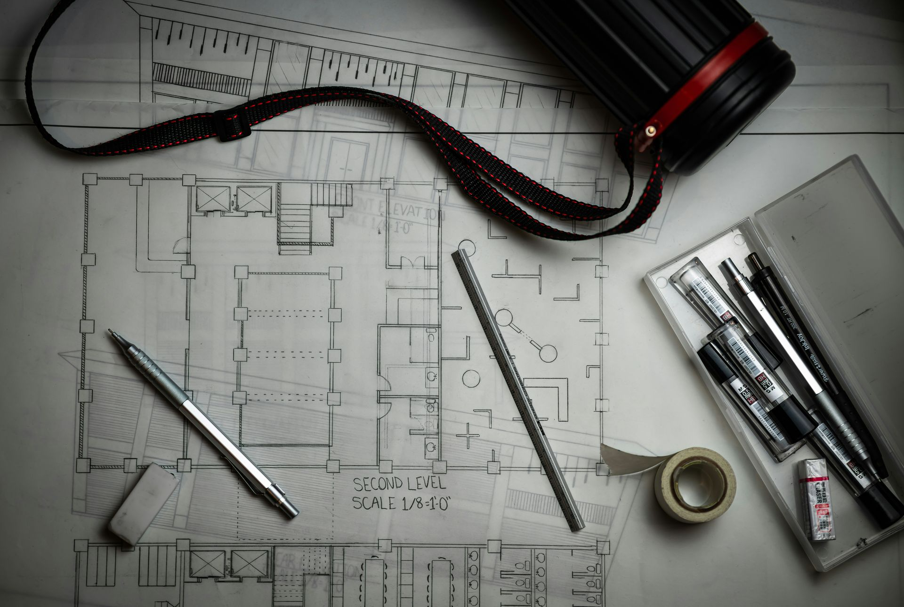
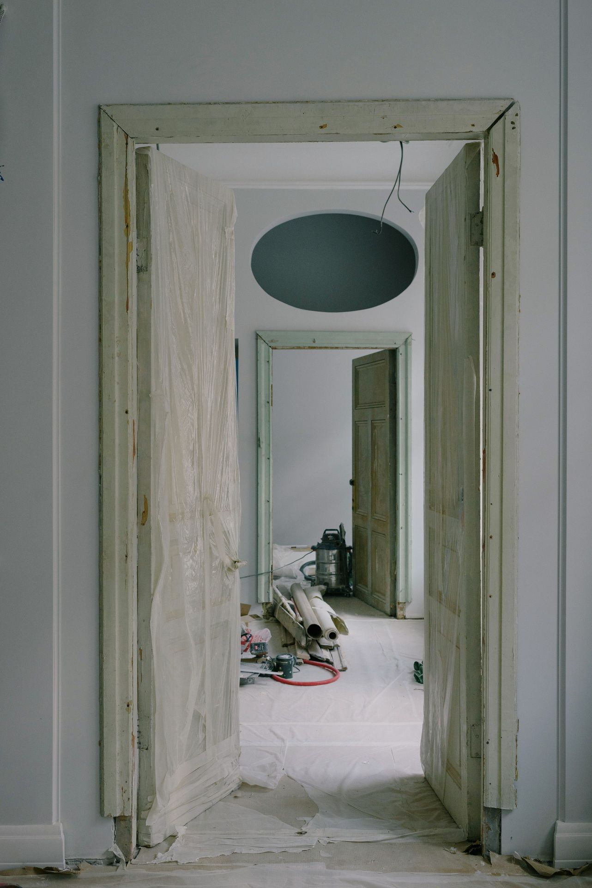
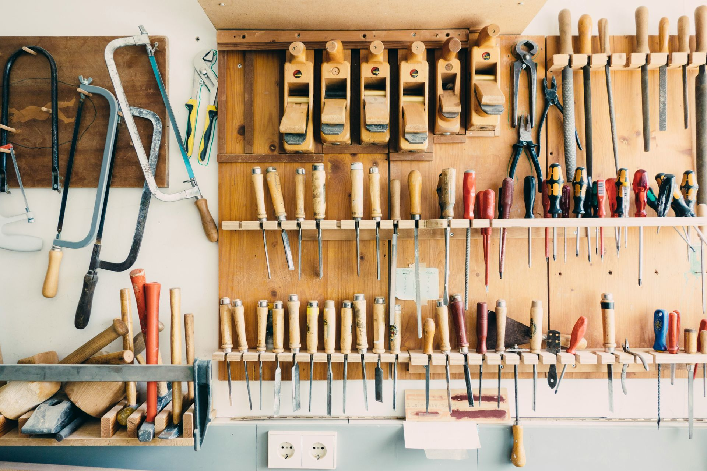

仕上がった住まいのイメージ内装リフォーム
床の張り替え、壁紙の貼り替え、室内ドアの交換。
現場の例：6畳の床の張り替え 1〜2日

作業のイメージリフォーム施工スタッフ（正社員・未経験歓迎）を募集しています。先輩と2人1組で、お客様の家に伺ってリフォーム工事を行う仕事です。床や壁紙、水まわり、窓やドア。最初の3か月は、先輩の補助から始めます。
地域のお客様の家に伺い、住まいのリフォーム工事を行います。現場へは先輩と2人1組で向かいます。

仕上がった住まいのイメージ床の張り替え、壁紙の貼り替え、室内ドアの交換。
現場の例：6畳の床の張り替え 1〜2日

仕上がった住まいのイメージキッチン・浴室・トイレ・洗面台の交換。
現場の例：トイレの交換 半日、浴室の交換 3〜4日

作業のイメージ窓や玄関ドアを、新しいものに交換します。
現場の例：内窓の取り付け 1か所1時間ほど
重いものは必ず2人で運びます。浴室パネルや便器、床材など、重い資材を扱うことがあるためです。運ぶときは台車も使います。ヘルメット・安全靴・手袋は会社が支給します。夏場は休憩を多めに取ります。
施工スタッフ8名のうち5名が、未経験から入社しています。道具の名前を覚えるところから、順番に。

入社後は担当の先輩が1人つき、週に1回、できるようになったことと次の目標を一緒に確認します。
入社〜3か月
材料の運搬・養生・片付け・簡単な取り付けを担当しながら、道具の名前と使い方、現場でのマナーを覚えます。
〜1年
床・壁紙など、一部の工程を任されるようになります。
〜3年
小さな現場は一人で担当。後輩に補助をお願いする立場になります。
※ 期間は目安です。

入社時に必要なのは普通自動車免許（AT限定可）のみ。仕事に必要な資格は、入社後に会社負担で取得できます。資格手当もあります。
朝は事務所に集合し、社用車で現場へ。現場は本社から車で30分圏内が中心です。17時に終業です。

現場のイメージ年間休日
120日
完全週休2日制
＋GW・夏季・年末年始
月の平均残業
10時間程度
有給休暇の平均取得
12日
昨年度
平均勤続年数
9年
（施工スタッフ・入社◯年目）

給与
月給24万円〜32万円
経験・能力により決定。未経験の方は24万円から。
| 職種 | リフォーム施工スタッフ |
|---|---|
| 雇用形態 | 正社員（期間の定めなし） |
| 試用期間 | 3か月（期間中の条件の変更なし） |
| 仕事内容（雇入れ直後） | 住宅の内装リフォーム・水まわり設備の交換などの施工補助 |
| 仕事内容の変更の範囲 | 会社の定める業務（施工・施工管理・見積もり補助） |
| 就業場所（雇入れ直後） | 本社および本社周辺の各現場（所在地：所在地） |
| 就業場所の変更の範囲 | 本社および会社の定める現場（転居を伴う転勤なし） |
| 勤務時間 | 8:00〜17:00（休憩90分） |
| 時間外労働 | あり（月平均10時間程度） |
| 休日・休暇 | 年間休日120日。完全週休2日制（日曜＋平日1日）、GW休暇5日・夏季休暇5日・年末年始休暇6日。祝日は営業日ですが、そのぶん長期休暇を設けています |
| 有給休暇 | 入社6か月後に10日付与（昨年度の平均取得日数：12日） |
| 給与 | 月給24万円〜32万円（経験・能力により決定。未経験の方は24万円から） |
| 残業代 | 固定残業代なし。残業した分は全額支給 |
| 昇給・賞与 | 昇給年1回、賞与年2回（業績による。昨年度実績：計2か月分） |
| 手当 | 通勤手当（上限月2万円）、資格手当 |
| 加入保険 | 雇用保険・労災保険・健康保険・厚生年金保険 |
| 受動喫煙防止措置 | 屋内禁煙（屋外に喫煙場所あり） |
| 福利厚生 | 資格取得支援（費用は会社負担）、作業着・工具の貸与、現場への移動は社用車 |
| 応募資格 | 学歴不問・未経験歓迎。普通自動車免許（AT限定可） |
| 募集者 | 株式会社あさつゆ住建 |
応募はこのページのフォームから受け付けています。面接は事務所で行い、希望すれば現場の見学もできます。
最初の3か月は、材料の運搬や片付けなど先輩の補助が中心なので、道具の名前や使い方から覚えていけます。担当の先輩が1人つき、毎週、できるようになったことを一緒に振り返ります。
浴室パネルや便器、床材などの重い資材は、必ず2人で運び、台車も使います。安全装備は会社が支給し、夏場は休憩を多めに取ります。
年間休日は120日です。完全週休2日制（日曜＋平日1日）に加えて、GW・夏季・年末年始にまとまった休みがあります。有給休暇は、昨年度の平均で12日取得しています。
月平均10時間程度です。年度末など工事が集中する時期は増えることがあります。残業した分は全額支給します。
入社時は普通自動車免許（AT限定可）があれば大丈夫です。仕事で使う資格は入社後に取ることができ、費用は会社が負担します。
作業着・工具・安全装備（ヘルメット・安全靴・手袋）は、会社が貸与・支給します。
できます。下のフォームで「見学・話を聞きたい」を選んで送信してください。
「応募する」か「見学・話を聞きたい」かを選んで送信してください。どちらも同じフォームで受け付けています。応募後のご連絡はメールで行います。見学だけのお申し込みでも、応募を無理にすすめることはありません。